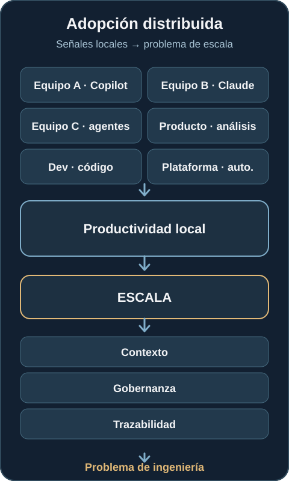
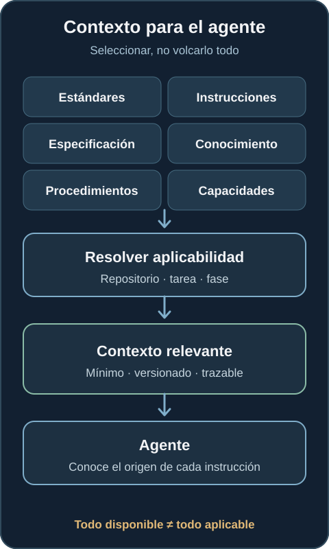
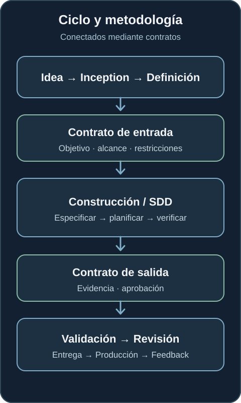
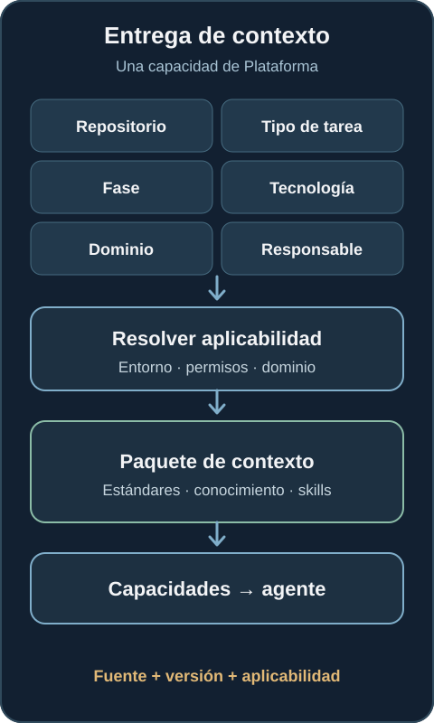
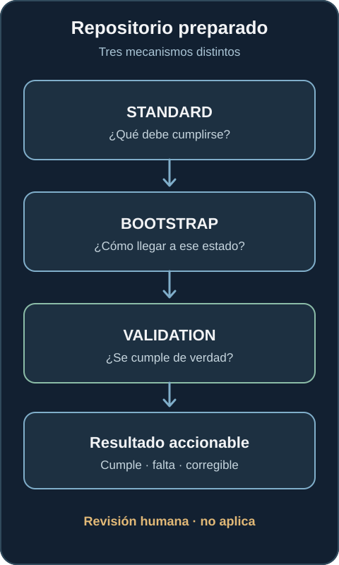
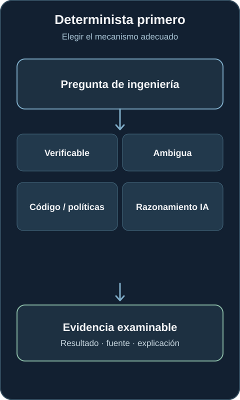
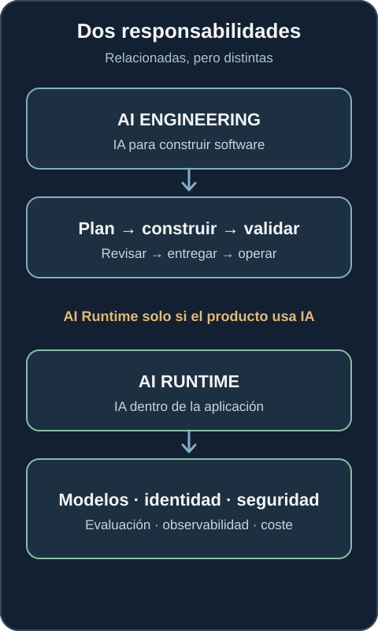
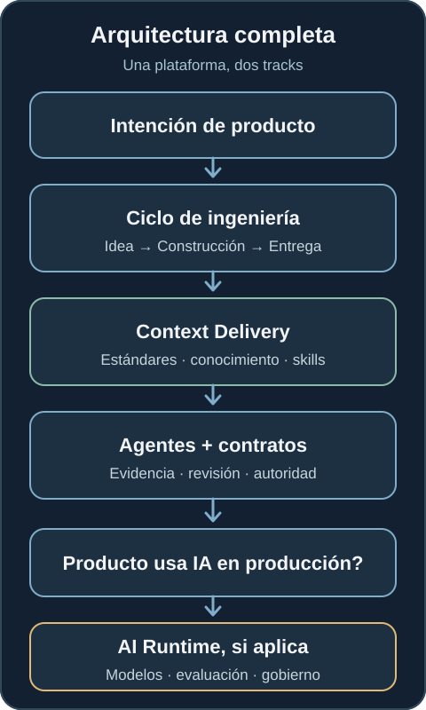

¿Qué pasa cuando la adopción de agentes de IA crece más rápido que su gobernanza?
El reto ya no es conseguir que la IA escriba más código. Es construir un modelo de ingeniería donde humanos y agentes puedan trabajar a escala sin perder contexto, estándares, trazabilidad ni responsabilidad.
La adopción de IA en ingeniería avanza más rápido que los modelos operativos que deberían soportarla. Un equipo utiliza Copilot; otro, Claude; otro empieza a crear agentes. Producto analiza requisitos con IA, Desarrollo genera código y Plataforma automatiza infraestructura. Durante un tiempo, cada equipo obtiene mejoras locales. Después intentamos escalar la práctica.
Las preguntas se vuelven más difíciles que ¿qué modelo deberíamos utilizar? ¿Dónde encuentra un agente las decisiones de arquitectura, el conocimiento del repositorio y las capacidades aprobadas de Plataforma? ¿Cómo sabemos que aplicó las reglas correctas? ¿Quién responde por el resultado? ¿Y cómo resolvemos esto sin convertir a Plataforma en el traductor manual de cada cambio?
El problema ya no es incorporar IA al desarrollo. El problema es construir un modelo de ingeniería capaz de utilizarla a escala.

El primer error: tratar la IA como una herramienta aislada
Añadir un asistente al IDE no crea un proceso de ingeniería asistido por IA. Un agente puede necesitar estándares corporativos, instrucciones del repositorio, la especificación del cambio, conocimiento del sistema, procedimientos reutilizables y capacidades aprobadas de Plataforma. Mucha de esta información ya existe, dispersa entre ADRs, wikis, pipelines, runbooks, tickets, políticas y el conocimiento de las personas.
Enviarlo todo al modelo tampoco es la respuesta. Demasiado contexto añade ruido; muy poco puede dejar fuera una restricción crítica. Copiar reglas corporativas en cada repositorio genera divergencia. Dejar que el modelo decida por sí solo qué política aplica convierte la gobernanza en una inferencia probabilística.
El objetivo no es maximizar el contexto. Es entregar el contexto mínimo relevante, aplicable y trazable para la tarea.

Un modelo operativo para AI Engineering
Entiendo la respuesta como un AI Engineering Operating System: un modelo operativo de contratos, estándares, capacidades y gobernanza a lo largo del ciclo de ingeniería; no un producto ni un gateway monolítico para cada llamada a un LLM. Conecta idea, inception, definición, construcción, validación, revisión, entrega, producción y feedback. La pregunta pasa a ser cómo participa la IA de forma segura en ese sistema, en lugar de qué herramienta recibe cada developer.
El AI-DLC de AWS es un ejemplo útil para razonar sobre la participación de la IA a lo largo de un ciclo. La arquitectura que propongo no depende de AWS ni de sus fases concretas. El ciclo indica dónde está el trabajo; una metodología indica cómo se trabaja dentro de una fase.
Ciclo y metodología necesitan contratos distintos
Durante Construcción, un equipo puede utilizar Spec-Driven Development (SDD): especificar, aclarar, planificar, dividir en tareas, implementar y verificar. Otro equipo puede utilizar otro método. Ninguno debería necesitar conocer todos los detalles de las fases anteriores y posteriores.
Un contrato de entrada puede incluir objetivo, alcance, restricciones, requisitos, artefactos esperados y riesgos. Un contrato de salida puede llevar resultados de validación, evidencia y estado de aprobación hasta Revisión. Así puede cambiar el método sin rediseñar todo el ciclo. Las herramientas cambian rápido; los contratos de ingeniería deberían cambiar de forma más deliberada.

La entrega de contexto es una capacidad de Plataforma
Alguien debe responder: para este repositorio, esta tarea y esta fase, ¿qué necesita realmente el agente? El developer no debería localizar cada documento corporativo. El agente tampoco debería recorrer indiscriminadamente toda la documentación de la organización.
Una capacidad de entrega de contexto puede utilizar repositorio, tipo de tarea, fase, tecnología, dominio, entorno, aplicabilidad y responsable para seleccionar estándares, instrucciones, conocimiento, skills y capacidades aprobadas. Cada elemento debe conservar su fuente, versión y aplicabilidad. Así podremos reconstruir qué vio el agente cuando actuó.
El nombre del componente importa menos que su responsabilidad: convertir conocimiento organizativo distribuido en contexto consumible y trazable para agentes.

El repositorio también necesita un contrato
Los repositorios fueron creados para personas capaces de interpretar conocimiento implícito. Un engineer puede preguntar a un compañero, recordar una conversación o detectar que un README está obsoleto. Los agentes necesitan interfaces más explícitas: instrucciones estables, ubicación del conocimiento técnico, especificaciones, procedimientos locales, reglas aplicables, comandos de validación, integración con CI, responsables y criterios de finalización.
Separaría tres mecanismos:
- Standard: ¿qué debe cumplirse para este tipo de repositorio?
- Bootstrap: ¿cómo puede llegar a ese estado?
- Validation: ¿qué evidencia demuestra que ese estado es real?
El resultado debe ser accionable: ya cumple, falta, puede corregirse automáticamente, requiere revisión humana o no aplica con una razón. Es un problema conocido de Platform Engineering: convertir un estado deseado en un camino repetible y un contrato verificable.

Mantener deterministas las comprobaciones deterministas
No todo necesita un LLM.
La existencia de un archivo, las versiones fijadas, las pruebas superadas, la configuración de una pipeline y los artefactos generados suelen ser preguntas para código o políticas. Comprobar si un requisito tiene evidencia puede comenzar de forma determinista, aunque valorar la calidad de esa evidencia requiera después criterio.
Los modelos son útiles para interpretar, sintetizar y comparar ante la ambigüedad. Usarlos para cada comprobación de verdadero o falso añade coste y variabilidad, y dificulta reproducir y auditar fallos. Ambos caminos deben producir evidencia examinable.

Separar AI Engineering de AI Runtime
Hasta aquí hablamos de utilizar IA para construir software. Otro problema es construir software que utiliza IA en producción. Un backend convencional desarrollado con agentes no necesita automáticamente una AI Runtime Platform. Una aplicación en producción que llama a modelos, ejecuta agentes, utiliza recuperación de información, clasifica datos, genera contenido o actúa sobre salidas probabilísticas sí la necesita.
Ese runtime necesita acceso a modelos, identidad de workloads, límites de tenants y datos, guardrails, evaluación, observabilidad, control de costes, seguridad, gobernanza y vías de intervención humana. Son responsabilidades reales. No deberían añadirse a cualquier repositorio solo porque sus developers utilicen IA.

Cuando ambos caminos existen, la arquitectura más amplia se vuelve clara: la intención de producto recorre un ciclo de ingeniería; la entrega de contexto hace que estándares y capacidades sean utilizables por agentes; la evidencia y las decisiones humanas controlan el avance. AI Runtime es una capa adicional solo cuando el producto en ejecución depende de IA.

Los agentes también se convierten en consumidores de la plataforma
Los equipos de Plataforma llevan años reduciendo la carga cognitiva de los developers con CI/CD, infraestructura como código, observabilidad, golden paths, catálogos de servicios, self-service y policy as code. Ahora otro consumidor necesita interfaces similares.
Los developers ya no son los únicos consumidores de la plataforma. Los agentes también empiezan a serlo.
Un agente necesita descubrir qué está permitido, qué es cierto, qué decisiones existen, cómo debe hacerse el trabajo y cómo demostrar que ha terminado. En mi trayectoria en Platform Engineering y SRE y en proyectos personales como GrowthMesh, la pregunta recurrente es cómo hacer reutilizables capacidades complejas sin ceder la autoridad sobre acciones con consecuencias.
El reto central no es cuánto código puede producir un modelo. Es cómo permitir que sistemas probabilísticos participen en procesos de ingeniería con contratos, contexto, evidencia, evaluación, trazabilidad, responsables y autoridad humana explícitos. Cuanta más autonomía concedamos, más cuidadosamente tendremos que diseñar sus límites.